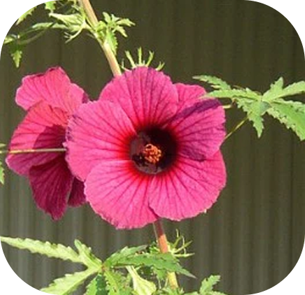
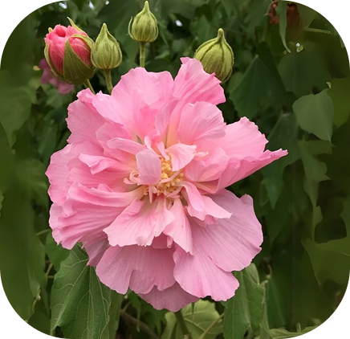
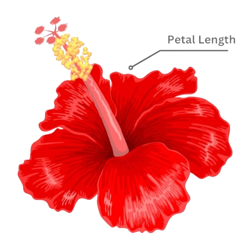
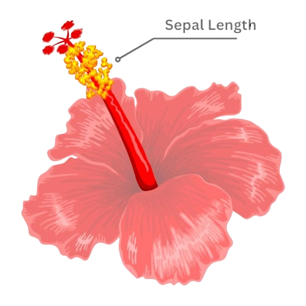

.png)
HIBISCUS
ROSA SENIS
Unlock the Power of Hibiscus: A Dataset for Scientific & AI Research
Request DatasetABOUT THE DATASET
This dataset is a comprehensive collection of 5100 samples of Hibiscus flowers, covering three main species:
Class 1
Rosa - Senis

Class 2
Canabinus

Class 3
Mutabilis
Each sample includes detailed Morphological features such as:

Petal Length
Color

Sepal Length
3
Classes
1700
Samples
per class
3
Features
per class
IMPORTANCE OF THE DATASET
Advances AI & Machine Learning Research
- Helps in training deep learning models for flower species classification and recognition.
- Supports computer vision applications in plant identification and conservation.
Supports Botanical & Ecological Studies
- Enables researchers to study morphological variations across species.
- Helps in tracking plant diversity and understanding environmental influences on growth.
Applications in Agriculture & Horticulture
- Assists in breeding and cultivation research for better plant varieties.
- Useful for early disease detection by comparing plant characteristics.
Promotes Open-Source Contribution
- Encourages collaboration in scientific communities and data-driven discoveries.
CREDITS
Ayaan Shaikh
Dhruvi Patel
Shravanpuri Goswami
Vansanth Sunkara